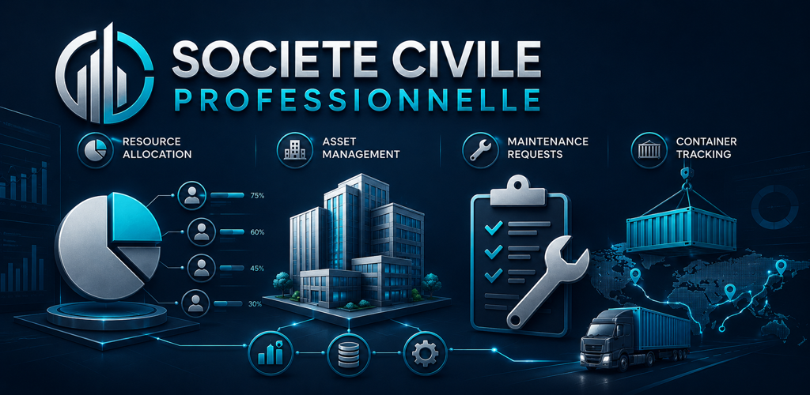

Business operations for Android
SCP Operations
A focused local workspace for resource allocation, asset readiness, maintenance requests, and container tracking.

Daily handover
Active work3
Managed assets1
Containers1
Built for practical daily control.
Teams can create records, assign ownership, follow priority, and keep status visible without setting up an account or connecting to external services.
ResourcesPlan team assignments, routes, and workload shifts from the mobile board.
AssetsTrack readiness, location, and owner for equipment that needs repeated checks.
MaintenanceRecord issues, set priority, and move requests through open, scheduled, active, and resolved states.
ContainersKeep visibility over dispatch, return, and availability for operational containers.
A simple workflow for busy handovers.
1. Capture
Create a resource, asset, maintenance, or container record with owner, location, priority, and notes.
2. Coordinate
Use the board and detail screens to compare next actions and update status as work changes.
3. Retain locally
Records and settings stay in local app storage until the app data is removed or the app is uninstalled.
Local by design.
SCP Operations has no account sign-in, no analytics, no advertising identifiers, no cloud sync, and no external service connection.